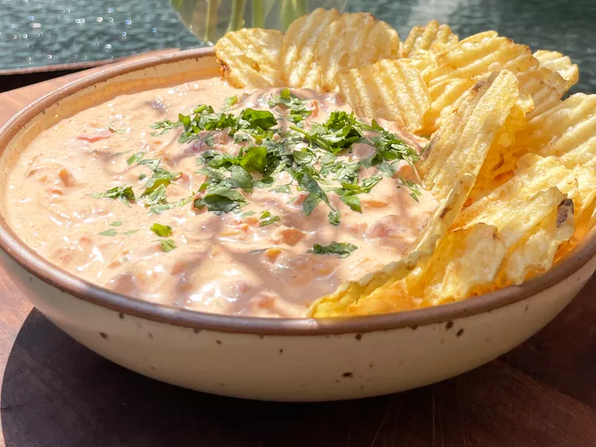

How to make Boat Dip

Whether you are on getting together with friends on the beach or hosting friends back at this house this dip is sure to tickle everyones tastebuds. this rich creamy dip is quick to make and only takes five ingredients to make!
With only five ingredients needed and a relatively short prep time this is always and easy go to for a quick appetizer or snack. Grab those measuring cups and your best chefs hat and I'll take you step by step through the process, lets get started!
Ingredients
- 14 oncues cream cheese
- 8 ounces shredded mexican cheese blend
- 1-10 ounce can of rotel
- 1 packet of taco seasoning
- 1/2 cup of finley chopped cilantro (save half for garnishing)
Directions
- Mix sour cream, shredded cheese, Rotel, taco seasoning, and cilantro together in a large bowl until thoroughly combined. Transfer the dip to a clean serving bowl and garnish with additional chopped cilantro.
- Serve the boat dip with desired chips and an assortment of dippable vegetables such as carrots, celery, and snap peas.
Cooking Tips
- he sour cream and the liquid from the Rotel might split after sitting in the fridge for a while. If this happens, just give it a quick stir to recombine.
- If you have time, chill the dip in the fridge for an hour or so before serving. This will allow the flavors to meld together more.
- Easily double the batch if you're serving a crowd. Just make sure your mixing bowl or container is large enough as it can be hard to mix together otherwise.